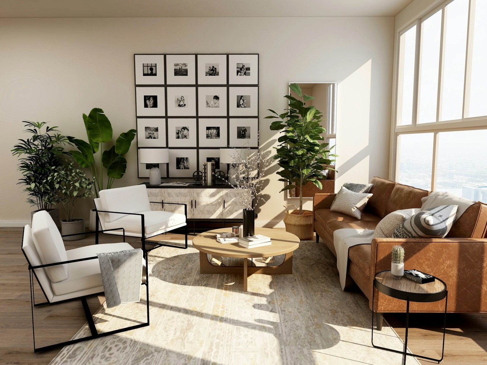

Residential stories
Editorial photography for homes, remodels, and properties shaped by natural light and refined detail.
California / world architecture

Whether photographing an arts and crafts bungalow or a mid-century modern structure, waiting for or creating the correct light, giving as natural a rendering as possible, and telling the story of the house is our goal.
I have photographed new and remodeled homes for clients throughout California, and I have traveled the world to photograph architecture for my own portfolio.
My assistant, Den Dowling, is a web designer and photographer, who specializes in night photography. We have added a drone / videographer to our team, so we can offer aerial footage and video to our description of your property.
Selected portfolio / California & beyond
Scroll and swipe to explore the collection
Editorial photography for homes, remodels, and properties shaped by natural light and refined detail.
Material-rich compositions that bring warmth, scale, and lived-in character to each room.
International commissions and object-based work that connect architecture with art and place.


Approach
Every home is photographed as a story — shaped by scent, material, and the way morning or evening light moves through the interior. The attention is always on what makes the space feel lived in and real.
Editorial and natural photography for homes, remodels, gardens, and architecture-led properties.
Material-focused composition for warm, intimate scenes that read with clarity and depth.
Drone footage and evening imagery for clients who want a cinematic overview of their property.

Walnut Creek Cottage
The project balances quiet restraint and deeply tactile materials. The goal was to preserve the character of the surrounding garden while highlighting beautiful light and proportion.

Atherton Poolhouse
Designed for modern California living, the composition celebrates shadow, geometry, and natural light to make the structure feel relaxed and still elegant.